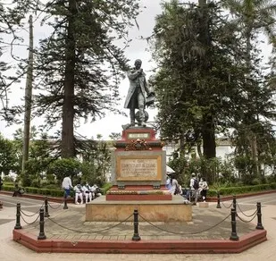

Culture, Traditions, and Daily Life
Welcome to Popayán
Popayán, known as “La Ciudad Blanca,” is a historic city in Cauca, Colombia. It is famous for its white colonial buildings and beautiful historic center. The city has a rich history and many important churches and landmarks. It is also known for its traditional food, like empanadas de pipián. In 2005, UNESCO recognized Popayán as a City of Gastronomy. Popayán is also famous for its Holy Week processions, which are an important cultural and religious tradition. Explore this website to learn more about the culture, food, traditions, and history of this beautiful city.
